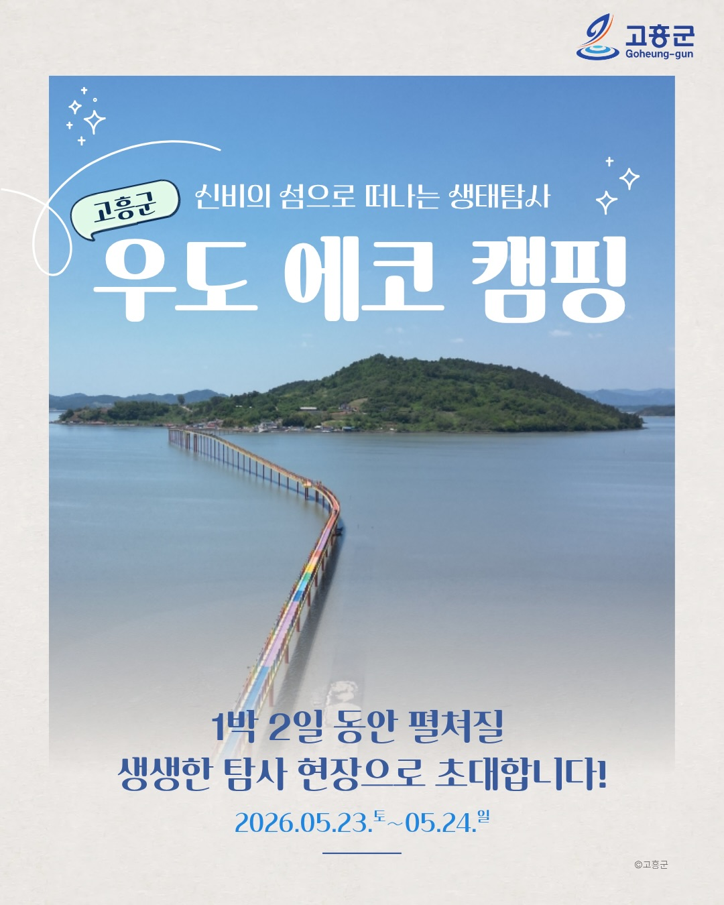

자연 속에서 배우는 과학
장이권 이화여대 교수와 함께 갯벌을 중심으로 우도의 생태를 탐사합니다. 물과 전기의 사용을 줄이고 일회용품 없이 머무는 프리미티브 캠핑입니다.
게시물 안내
갈다와 함께 고흥군으로 에코 캠핑⛺️떠나실 분을 찾습니다. //마감되었습니다//
5월 23일부터 1박 2일간 전라남도 고흥군 우도에서 펼쳐지는 생태탐사 캠핑🏕️ 탐사전문가로 이화여대 장이권교수님이 함께하신답니다.
🦀 갯벌탐사를 중심으로 우도의 자연경관을 탐험하는 시간이 될거에요.
본 프로그램은 최소한의 전기와 물을 사용하며 일회용품을 제공하지 않는 Primitive 프리미티브 에코 캠핑으로 운영됩니다. 관심있으신 분들은 갈다 홈페이지에서 안내문을 꼼꼼히 확인하시고 서둘러 신청해주세요.
_
주최. 고흥군
기획운영. 갈다x길물빛콘텐츠연구소